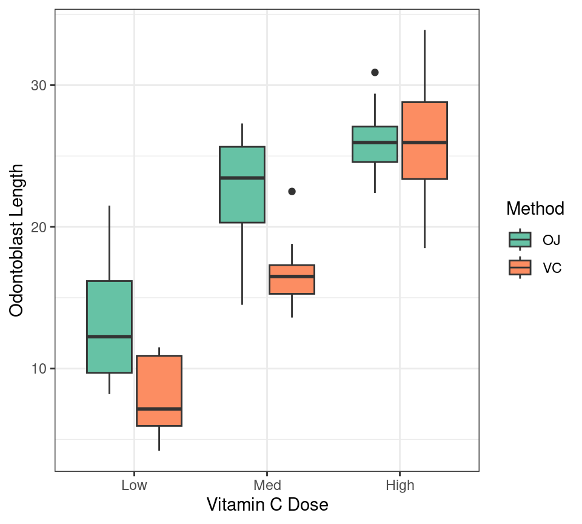

pets <- c("My dog", "Your cat", "No-one's rat")
pets[1] "My dog" "Your cat" "No-one's rat"length(pets)[1] 3typeof(pets)[1] "character"ASI: Introduction to R
Black Ochre Data Labs
Telethon Kids Institute
November 21, 2023
R EnvironmentTextManipulation.Rlibrary(tidyverse) to the top of the script and executeregex is not an R exclusive conceptbash, python etcR syntax is slightly different but mostly compatiblestringrc() to form a character vectorR object
ggplot allows unquoted column namesstringr is always loaded with the tidyverse[1] "MY DOG" "YOUR CAT" "NO-ONE'S RAT"[1] "my dog" "your cat" "no-one's rat"[1] "My Dog" "Your Cat" "No-One's Rat"negate = TRUENA is returned where no pattern is found
NA is Not Available / Missing"[A-Z]" restricts the pattern to any uppercase letters+ symbol str_remove()"." as a wildcard * extends a match zero or more times (similar to +)" ." matches a space followed by anything".+"
str_replace_all() is the most powerful of the core functionsstring, pattern and replacement
"a" will be replaced by "o""()"\\1, \\2…paste() is a key base function
R automatically recycles values when vector lengths don’t matchpaste() uses sep = " " as the default separator
RealTimeData.xlsx file as before. Extract the timepoint from the first column, ensuring that “h” is always lower case.factorsforcats is the tidyverse package
base functions are still very commonly used and simple
as.factor() and factor()Very easy to mix characters and factors up
[1] "Low" "Low" "Low" "Low" "Low" "Low" "Low" "Low" "Low" "Low"
[11] "Med" "Med" "Med" "Med" "Med" "Med" "Med" "Med" "Med" "Med"
[21] "High" "High" "High" "High" "High" "High" "High" "High" "High" "High"
[31] "Low" "Low" "Low" "Low" "Low" "Low" "Low" "Low" "Low" "Low"
[41] "Med" "Med" "Med" "Med" "Med" "Med" "Med" "Med" "Med" "Med"
[51] "High" "High" "High" "High" "High" "High" "High" "High" "High" "High"as.factor() from base creates factors in alphanumeric order
[1] Low Low Low Low Low Low Low Low Low Low Med Med Med Med Med
[16] Med Med Med Med Med High High High High High High High High High High
[31] Low Low Low Low Low Low Low Low Low Low Med Med Med Med Med
[46] Med Med Med Med Med High High High High High High High High High High
Levels: High Low Medfactor()
[1] Low Low Low Low Low Low Low Low Low Low Med Med Med Med Med
[16] Med Med Med Med Med High High High High High High High High High High
[31] Low Low Low Low Low Low Low Low Low Low Med Med Med Med Med
[46] Med Med Med Med Med High High High High High High High High High High
Levels: Low Med Highforcats offers some new approaches
fct creates factors in order (as does fct_inorder()) [1] Low Low Low Low Low Low Low Low Low Low Med Med Med Med Med
[16] Med Med Med Med Med High High High High High High High High High High
[31] Low Low Low Low Low Low Low Low Low Low Med Med Med Med Med
[46] Med Med Med Med Med High High High High High High High High High High
Levels: Low Med High [1] Low Low Low Low Low Low Low Low Low Low Med Med Med Med Med
[16] Med Med Med Med Med High High High High High High High High High High
[31] Low Low Low Low Low Low Low Low Low Low Med Med Med Med Med
[46] Med Med Med Med Med High High High High High High High High High High
Levels: Low Med High [1] low low low low low low low low low low med med med med med
[16] med med med med med high high high high high high high high high high
[31] low low low low low low low low low low med med med med med
[46] med med med med med high high high high high high high high high high
Levels: low med high [1] Low Low Low Low Low Low Low Low Low Low Med Med Med Med Med
[16] Med Med Med Med Med High High High High High High High High High High
[31] Low Low Low Low Low Low Low Low Low Low Med Med Med Med Med
[46] Med Med Med Med Med High High High High High High High High High High
Levels: High Med Low## First change the original column
pigs$dose <- factor(
pigs$dose, levels = c("Low", "Med", "High")
)
## Then make the plot
ggplot(
pigs, aes(x = dose, y = len, fill = supp)
) +
geom_boxplot() +
scale_fill_brewer(palette = "Set2") +
labs(
x = "Vitamin C Dose",
y = "Odontoblast Length",
fill = "Method"
) +
theme_bw() 